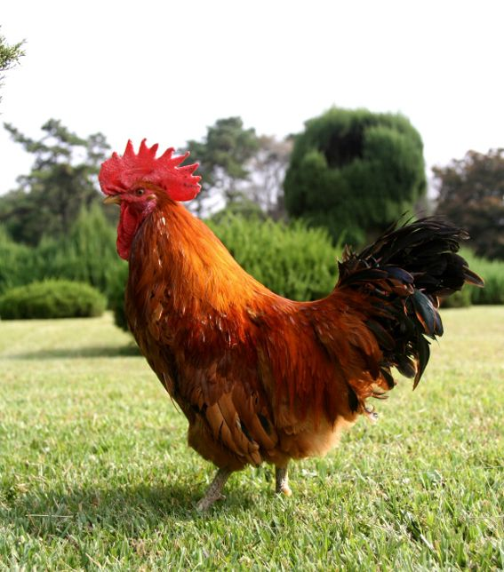

The chicken (Gallus domesticus) is a domesticated bird, with attributes of wild species such as the red and grey junglefowl[1] that are originally from Southeastern Asia. Rooster or cock is a term for an adult male bird, and a younger male may be called a cockerel. A male that has been castrated is a capon. An adult female bird is called a hen and a sexually immature female is called a pullet. Originally raised for cockfighting or for special ceremonies, chickens were not kept for food until the Hellenistic period (4th–2nd centuries BC).[2][3] Humans now keep chickens primarily as a source of food (consuming both their meat and eggs) and as pets.
Chickens are one of the most common and widespread domestic animals, with a total population of 23.7 billion as of 2018,[4] up from more than 19 billion in 2011.